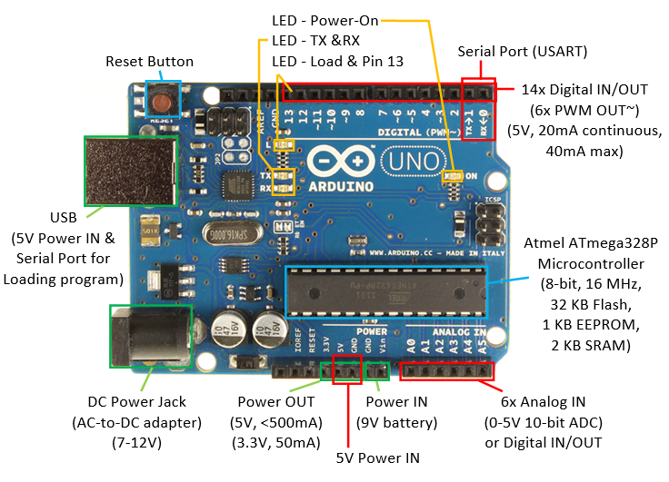
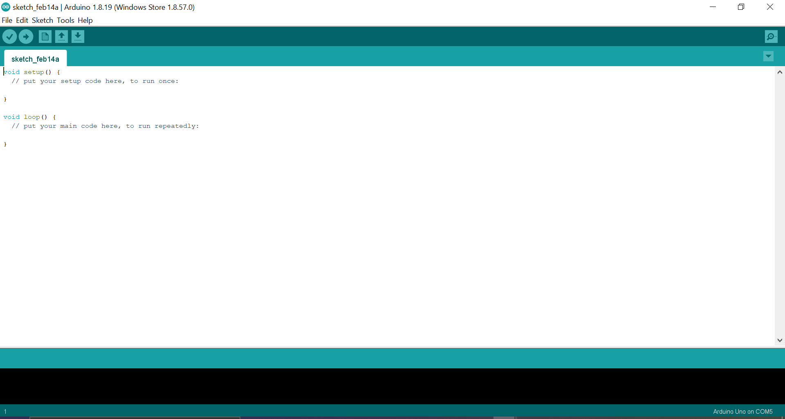
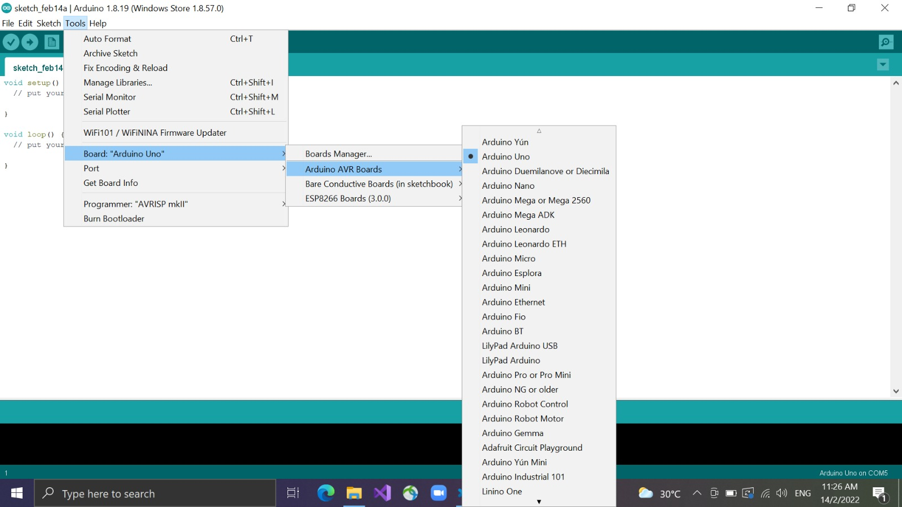
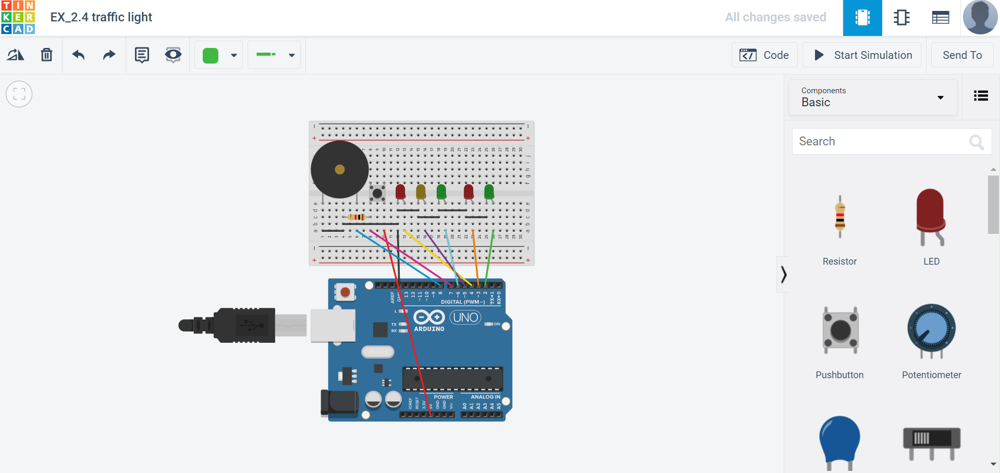
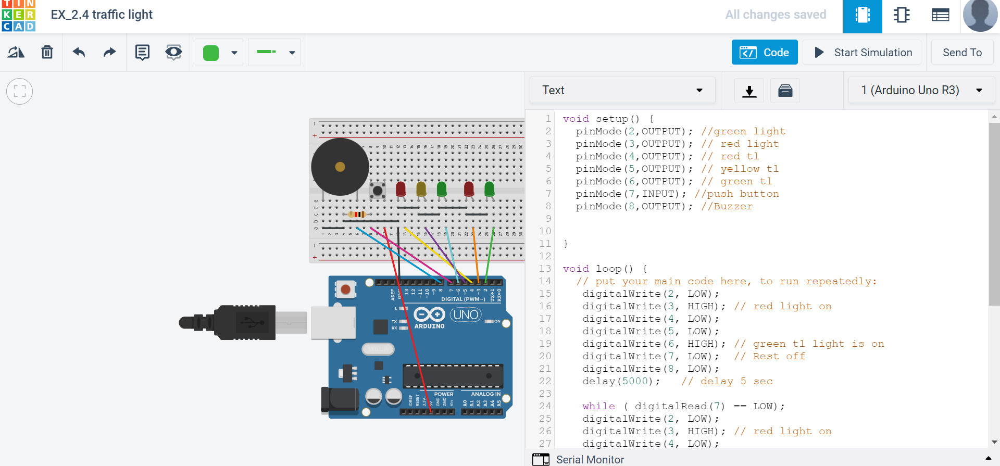

What is Arduino Uno ?
The Arduino Uno is an open-source microcontroller board based on the Microchip ATmega328P microcontroller and developed by Arduino.cc. The board is equipped with sets of digital and analog input/output pins that may be interfaced to various expansion boards and other circuits
In order to program the Arduino Uno, We are require to download a Arduino IDE where we will be programming our input/output.
This is what it looks like when you open up your Arduino IDE.
For Arduino IDE, you are require to select the correct arduino board as it may not be able to program properly or cannot be read.
For most the program for input/output, you can find it on examples or online.
Lets say you do not have the physical components or you are scared to burn your electronic components or arduino uno.You can use this website called "tinkerCad".
Tinkercad is a website which allows you to simulate the connection of your electronic components and testing your program as well. To see whether if every thing is running smoothly.
This connection was my past project which I did with Tinkercad
This is where I simulate my code and test it whether it's running smoothly and according to what I want.